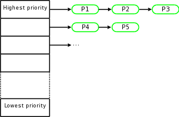

The Rotating Staircase Deadline Scheduler
Enter Con Kolivas, who has been working on improving interactivity for some time. His latest proposal is the Rotating Staircase Deadline Scheduler (RSDL), which attempts to provide good interactive response with a relatively simple design, complete fairness, and bounded latency. This work takes ideas from Con's earlier staircase scheduler (covered here in June, 2004), but with a significantly different approach.

Like many schedulers, the RSDL maintains a priority array, as is crudely diagrammed to the left. At each level there is a list of processes currently wanting to run at that priority; each process has a quota of time it is allowed to execute at that priority. The processes at the highest priority are given time slices, and the scheduler rotates through them using a typical round-robin algorithm.When a process uses its quota at a given priority level, it is dropped down to the next priority and given a new quota. That process can thus continue to run, but only after the higher-priority processes have had their turn. As processes move down the staircase, they increasingly must contend with the lower-priority processes which have been patiently waiting on the lower levels. The end result is that even the lowest-priority processes get at least a little CPU time eventually.
An interesting feature of this scheduler is that each priority level has a quota of its own. Once the highest priority level has used its quota, all processes running at that level are pushed down to the next-lower level, regardless of whether they have consumed their individual CPU time quotas or not. As a result of this "minor rotation" mechanism, processes waiting at lower priority levels need only cool their heels for a bounded period of time before all other processes are running at their level. The maximum latency for any process waiting to run is thus bounded, and can be calculated; there is no starvation with this scheduler.
As processes use up their time, they are moved to a second array, called the "expired" array; there they are placed back at their original priority. Processes in the expired array do not run; they are left out in the cold until no more processes remain in the currently active array - or until all processes are pushed off the bottom of the active array as a result of minor rotations. At that point, a "major rotation" happens: the active and expired arrays are switched and the whole series of events restarts from the beginning.
The current scheduler tries to locate interactive tasks by tracking how often each process sleeps; those seen to be interactive are then rewarded with a priority boost. The RSDL does away with all that. Instead, processes which sleep simply do not use all of their time at the higher priority levels. When they run, they are naturally advantaged over their CPU-hungry competition. If a process sleeps through a major rotation, its quota goes back into the run queue's priority-specific quota value. Thus, it will be able to run at high priority even if other high-priority processes, which have been running during this time, have been pushed to lower priorities through minor rotations. All of this should add up to quick response from interactive applications.
A few benchmarks posted by Con show that systems running with RSDL perform slightly better than with the stock 2.6.20 scheduler. The initial reports from testers have been positive, with one person urging that RSDL go into 2.6.21. That will not happen at this point in the release cycle, but Linus is favorable to including RSDL in a future kernel:
Con has recently been heard to complain about difficulties getting his
interactivity improvements into the mainline. This time around, however,
he may find the course of events to be rather more gratifying.
| Index entries for this article | |
|---|---|
| Kernel | Interactivity |
| Kernel | Scheduler |
| Kernel | Staircase scheduler |
Posted Mar 8, 2007 10:47 UTC (Thu)
by jospoortvliet (guest, #33164)
[Link] (3 responses)
It's good to see this getting some attention, as RSDL seems to be a good piece of work. Starvation has been a problem in the kernel, giving short stalls now and then. A completely fair yet interactive scheduler like this one would do away with that, at the expense of ppl having to use nice probably a bit more on heavy processes like compiling.
Maybe apps like dpkg or emerge should start nicing themselves by default...
Still, RSDL gives a perfectly responsive desktop even when a make -j4 is running aside with aMule, mail etcetera, so its doing better than mainline on my system already.
And a better throughput is really an unexpected but nice benefit. Maybe worth mentioning RSDL does a bit better than mainline on the MySQL scaling issue:
Posted Mar 8, 2007 12:54 UTC (Thu)
by dion (guest, #2764)
[Link]
Posted Mar 8, 2007 14:35 UTC (Thu)
by farnz (subscriber, #17727)
[Link] (1 responses)
I've not prodded Debian for a while, but I'd be surprised if there wasn't a similar setting for apt/dpkg.
Posted Mar 8, 2007 19:46 UTC (Thu)
by vmole (guest, #111)
[Link]
Posted Mar 8, 2007 19:10 UTC (Thu)
by sbergman27 (guest, #10767)
[Link] (2 responses)
Yes, indeed. But every time I see an article like this, I can't help but think back to that time, some years ago, when interest in the Linux process scheduler really fired up. It may have been during 2.1.x, but I can't remember for sure.
I do remember Linus stating on LKML that he didn't think that process scheduling was very interesting. In his opinion, process scheduling was the sort of thing that you worked on, got right, and then left for a project that was actually challenging.
I wonder how he might have responded to a proposal called the "Rotating Staircase DeadLine Scheduler" back then?
At any rate, RSDL is doomed once I finish up and present my Dimensionally Transcendent Lorentzian Transformational Scheduler. It's almost finished. But seems to be stuck in a loop at the moment... ;-)
Posted Mar 8, 2007 23:49 UTC (Thu)
by njs (subscriber, #40338)
[Link]
Is that the one that lets processes perform an infinite loop so fast that they travel back in time and become their own process group leader?
Posted Mar 15, 2007 16:58 UTC (Thu)
by jd (guest, #26381)
[Link]
Huh. A scheduler that's larger on the inside than the outside. You do realize that you'll have to return the book you copied it from to the Panopticon Library on Gallifrey?
At one point, HP produced a scheduler plugin system. If anyone has a copy of that still, there may be ideas in it worth plundering, err re-using, as no algorithm is going to be good for all cases. What you want is a hypervisor of some sort to analyze the generalized characteristics and swap scheduler if the one currently running is unsuitable for the problem at hand.
Posted Mar 13, 2007 17:56 UTC (Tue)
by aigarius (guest, #7329)
[Link]
Posted Mar 15, 2007 17:27 UTC (Thu)
by guest (guest, #2027)
[Link]
Posted Mar 17, 2007 8:00 UTC (Sat)
by muwlgr (guest, #35359)
[Link]
I wonder if this new scheduler can detect such "isochronous" CPU consumers and deal with them accordingly ?
Lovely article ;-)The Rotating Staircase Deadline Scheduler
http://jeffr-tech.livejournal.com/5705.html
http://bhhdoa.org.au/pipermail/ck/2007-March/006790.html
http://bhhdoa.org.au/pipermail/ck/2007-March/006794.html
I'd like to second that idea about selfnicing, but perhaps it would be better to simply let crond do that?The Rotating Staircase Deadline Scheduler
Although it's not currently on by default, emerge will already renice itself if you set the PORTAGE_NICENESS variable in /etc/make.conf. I do this so that an emerge doesn't kill system performance.
Self-renicing emerge
Apt and dpkg are not, in general, CPU bound, but I/O bound. Nicing I/O bound processes generally causes more problems than it solves, because you end up blowing the file cache.Self-renicing emerge
"""CPU scheduling seems to be one of those eternally unfinished jobs."""The Rotating Staircase Deadline Scheduler
>Dimensionally Transcendent Lorentzian Transformational SchedulerThe Rotating Staircase Deadline Scheduler
Dimensionally Transcendent Lorentzian Transformational Scheduler
The Rotating Staircase Deadline Scheduler
Finally! A scheduler that non-kerlen programmers can understand with ease. Pure genius.The Rotating Staircase Deadline Scheduler
I thought Con had said this patch is better for server loads, not desktops. How does this compare with his Staircase scheduler for interactivity?The Rotating Staircase Deadline Scheduler
On my system, KDE's 3.5.5 Konqueror uses CPU time in a very strange way. It sleeps for about 60% of time, then does something CPU-intensive for 40%. Its interchanging sleeps/runs are quite short, so its priority is not lowered by the scheduler, and its CPU consumption has its visible impact on Mozilla Seamonkey 1.1.1 running in the nearby X session on the same CPU. Manual renicing of Konqueror to level 19 helps, but should not it be automatic ?The Rotating Staircase Deadline Scheduler